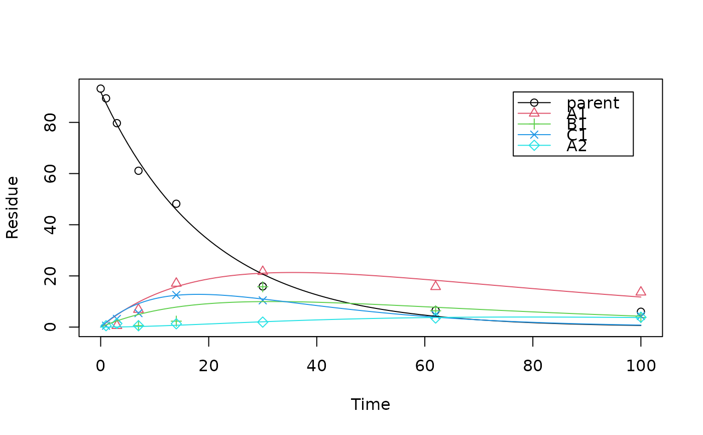

schaefer07_complex_case.RdThis dataset was used for a comparison of KinGUI and ModelMaker to check the software quality of KinGUI in the original publication (Schäfer et al., 2007). The results from the fitting are also included.
schaefer07_complex_case
The data set is a data frame with 8 observations on the following 6 variables.
timea numeric vector
parenta numeric vector
A1a numeric vector
B1a numeric vector
C1a numeric vector
A2a numeric vector
The results are a data frame with 14 results for different parameter values
Schäfer D, Mikolasch B, Rainbird P and Harvey B (2007). KinGUI: a new kinetic software tool for evaluations according to FOCUS degradation kinetics. In: Del Re AAM, Capri E, Fragoulis G and Trevisan M (Eds.). Proceedings of the XIII Symposium Pesticide Chemistry, Piacenza, 2007, p. 916-923.
data <- mkin_wide_to_long(schaefer07_complex_case, time = "time") model <- mkinmod( parent = list(type = "SFO", to = c("A1", "B1", "C1"), sink = FALSE), A1 = list(type = "SFO", to = "A2"), B1 = list(type = "SFO"), C1 = list(type = "SFO"), A2 = list(type = "SFO"), use_of_ff = "max")#>#> $ff #> parent_A1 parent_B1 parent_C1 parent_sink A1_A2 A1_sink #> 0.3809620 0.1954665 0.4235715 0.0000000 0.4479662 0.5520338 #> #> $distimes #> DT50 DT90 #> parent 13.95078 46.34350 #> A1 49.75343 165.27731 #> B1 37.26912 123.80533 #> C1 11.23131 37.30959 #> A2 28.50569 94.69386 #># } # Compare with the results obtained in the original publication print(schaefer07_complex_results)#> compound parameter KinGUI ModelMaker deviation #> 1 parent degradation rate 0.0496 0.0506 2.0 #> 2 parent DT50 13.9900 13.6900 2.2 #> 3 metabolite A1 formation fraction 0.3803 0.3696 2.9 #> 4 metabolite A1 degradation rate 0.0139 0.0136 2.2 #> 5 metabolite A1 DT50 49.9600 50.8900 1.8 #> 6 metabolite B1 formation fraction 0.1866 0.1818 2.6 #> 7 metabolite B1 degradation rate 0.0175 0.0172 1.7 #> 8 metabolite B1 DT50 39.6100 40.2400 1.6 #> 9 metabolite C1 formation fraction 0.4331 0.4486 3.5 #> 10 metabolite C1 degradation rate 0.0638 0.0700 8.9 #> 11 metabolite C1 DT50 10.8700 9.9000 9.8 #> 12 metabolite A2 formation fraction 0.4529 0.4559 0.7 #> 13 metabolite A2 degradation rate 0.0245 0.0244 0.4 #> 14 metabolite A2 DT50 28.2400 28.4500 0.7